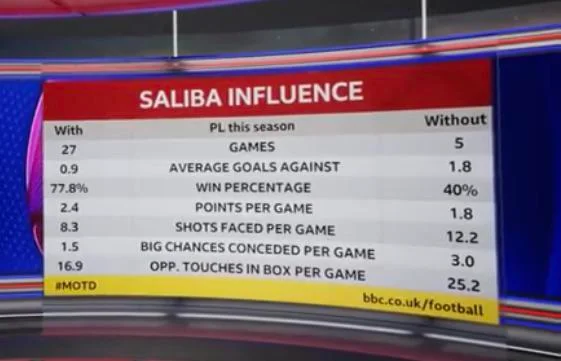

Summer Transfer Signings
Defense positons
Right back and Centre back positions
During the back end of last season, Arsenal football club players became fatigued by the numerous games played
and the lack of squad depth in the team.
This resulted to them losening a grip on the premier league title to the defending champions Manchester city.
The centre back position was the most affected area as an injury to William Saliba (best centre back in the
2022-2023
season) made Arsenal football club vunrable. More goals were conceded as his replacements,-Rob Holding and Yakub
Kiwior-were
unable to rise to the occasion and match his defensive prowess.

William Saliba extends his contract to 2027
Mikel Arteta types of players
Mikel Arteta, as the manager of Arsenal Football Club is a high profile manager who burst into the footballing
world during the 2019-2020 season by coaching Arsenal Football club to its 14th FA cup win in their history.
This was after 6 months of taking charge of Arsenal Football club.
Currently Manager, Mikel Arteta has been ranked the 4th best manager according to ESPN rankings.
Some players
refer to him as a control freak while others call him a leader and determined manager.
Here I can provide some insights into the qualities and characteristics he tends to prioritize:
- Tactical Understanding: Arteta values players who can grasp and execute his
tactical instructions effectively.
He looks for players who can adapt to different systems, understand positional responsibilities, and
contribute
to the team's overall game plan.
- Technical Proficiency: Arteta emphasizes technical ability and looks for players
who are comfortable on the
ball, possess good passing accuracy, and have strong ball control. This is crucial for the possession-based
style of play that Arteta often implements.
- Work Rate and Discipline: Arteta values players who are hardworking, disciplined,
and committed to the team's
objectives. He expects players to press high, track back defensively, and contribute to both attacking and
defensive phases of play.
- Versatility: Arteta prefers players who can play in multiple positions or fulfill
various roles within the team.
This flexibility allows him to make tactical adjustments and gives players more opportunities to contribute.
- Intelligence and Decision Making: Arteta values players with high football
intelligence who can make quick and
effective decisions on the field. He looks for players who can read the game well, anticipate situations,
and
make the right choices in terms of passing, movement, and positioning.
- Leadership: Arttea loves leaders on the pitch an this was visible during the
aqusition of players like Olexandza Zinchenko, Martin Odegaard, Gabriel Jesus, and Albert Sambi Lokonga. He
visions if the team is full or leaders , then the mentality of the other players and the club will change
and become hungry for silverware. This is visible from the 2022-2023 season where Arsenal Football Club
narrowly missed the Premier league title by 5 points.
Arsenal Defensive Targets
Below are two names that have been heavily linked to Arsenal this summer window.
| Name |
Team |
price |
- Jurrien Timber
|
Ajax |
45 Million |
- Marc Guehi
|
Crystal Palace |
50 Million |
You can add some of your suggestions of players you fancy might fit Artetas expectation below.
Jurrien Timber
Jurriën Timber is a Dutch professional footballer who currently plays as a center-back for Ajax (in the
Eredivisie) and the Dutch National Team. Below are some of the skills he possesses that make him stand
out among other players.
- Versatility:
Jurriën Timber is known for his versatility as a defender. In addition to playing as a
center-back, he is also capable of playing as a right-back or in a defensive midfield role. This
flexibility can be appealing to managers who value players who can fulfill multiple positions./,
- Technical Ability:
Timber possesses good technical skills for a defender. He is comfortable on the
ball, has good passing accuracy, and can initiate attacks from the back. This aligns with the
possession-based style of play that Mikel Arteta has emphasized during his time at Arsenal.
- Attributes:
Timber demonstrates solid defensive attributes, including strong positioning,
good reading of the game, and the ability to make timely interceptions and tackles. His physicality
and aerial ability also contribute to his effectiveness in defensive duels.
- Composure and Decision Making:
Timber displays composure on the ball and tends to make intelligent
decisions when under pressure. He is known for his calmness in possession and ability to make the
right choices in terms of passing or distributing the ball.
Jurrien Timber at Ajax
Marc Guehi at Crystal palace